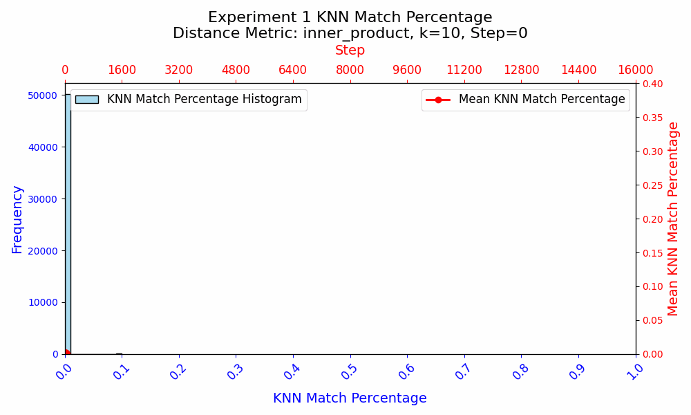
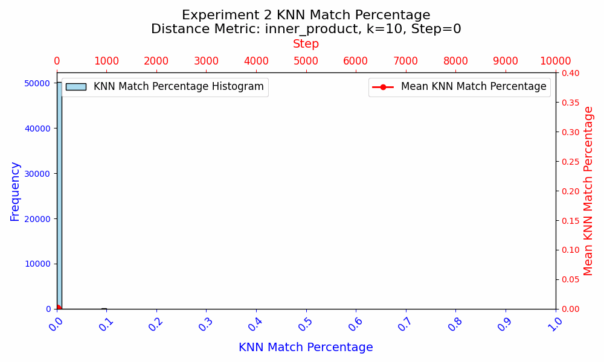
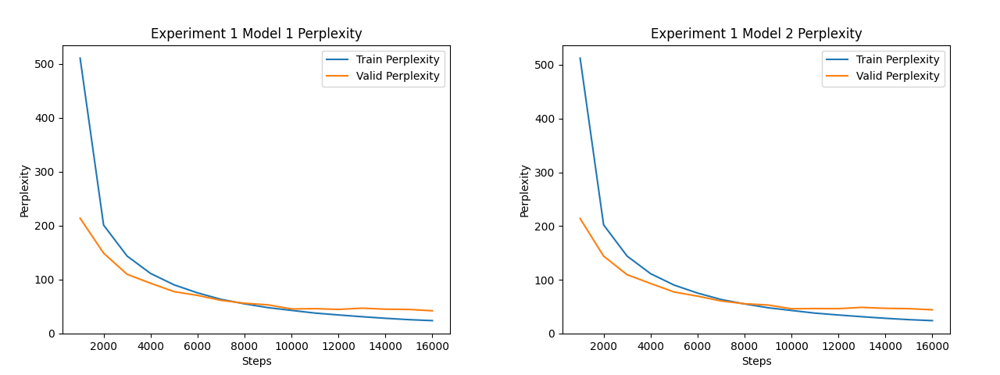
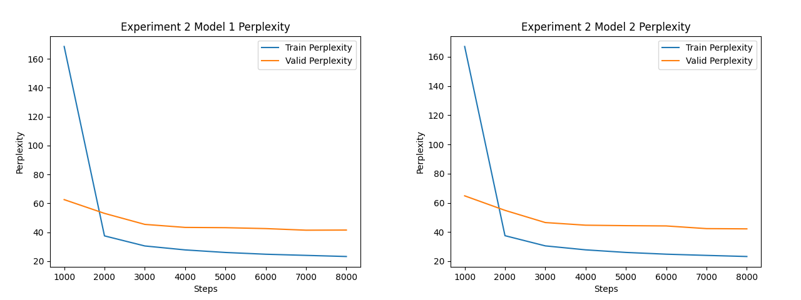

The Butterfly Effect: How Random Initialization Shapes WTE Semantic Similarity
.==-. .-==.
\()8`-._ `. .' _.-'8()/
(88" ::. \./ .:: "88)
\_.'`-::::.(#).::::-'`._/
`._... .q(_)p. ..._.'
""-..-'|=|`-..-""
.""' .'|=|`. `"".
,':8(o)./|=|\.(o)8:`.
(O :8 ::/ \_/ \:: 8: O)
\O `::/ \::' O/
""--' `--""
Here, I aim to measure the impact of random weight initialization on the semantics of word token embeddings. I run two experiments:
- If I randomly initialize two language models, how will their embeddings differ after identical training?
- If I take a two copies of a pre-trained language model, reinitialize the embeddings, and freeze all weights except for the embeddings, how do the embeddings differ after subsequent identical training?
We know that the training process of machine learning models is highly stochastic and dependent on non-differentiable factors. For example, models are sensitive to small changes in hyperparameters. For language models, the choices made regarding tokenization can be very important (see one of my favorite ML posts on "glitch" tokens). Innovations like layer normalization have enhanced the robustness of models to weight initialization techniques, improving training stability and performance. However, regardless of the initialization technique or use of layer norm, different random weight initializations will yield different models. I am curious about how semantically different the embeddings can become due to random weight initialization.
I’m not sure if there are any papers to this effect, but it is easy enough to experiment yourself!
Methods
The experiment uses a decoder-only transformer model. While bidirectional models may produce higher-quality embeddings, I am more interested in GPT/decoder-style models which are more popular. I use an embedding dimension of 512 and the GPT-2 tokenizer.
The training objective is the standard next-token prediction pre-training task. I use the WikiText-2 corpus as the dataset.
Similarity
What constitutes similarity between two sets of word token embeddings is not clearly defined. I am concerned about the semantic similarity between embedding spaces, so ideally, we would interchange the embeddings and compare their performance on downstream tasks. Without such a dataset, I settle for an interpretable measure that doesn't require external tasks but still attempts to capture the semantic differences between the embedding spaces.
This approach involves, for token \( i \), finding the tokens that are most similar to it in its embedding space and determining if those tokens are also among the most similar tokens to token \( i \) in the other embedding space.
The metric I use is K-nearest neighbors Jaccard coefficient. To compute the token-wise similarity, first find the K closest tokens to a token's vector in each embedding space. The metric I use for within-embedding space closeness is the inner-product since it captures both directionality and magnitude. Then, the overlap (intersection over union) between the sets of similar tokens can be computed, which tells us the token-wise similarity between the embedding spaces. This paper led me to determine that this was an effective metric.
The token-wise "KNN Match Similarity," as I call it, is given by:
$$\text{Similarity}(t_i^{(1)}, t_i^{(2)}) = \frac{| \mathcal{N}_K^{(1)}(t_i^{(1)}) \cap \mathcal{N}_K^{(2)}(t_i^{(2)}) |}{| \mathcal{N}_K^{(1)}(t_i^{(1)}) \cup \mathcal{N}_K^{(2)}(t_i^{(2)}) |}$$
Where \( t_i^{(1)} \) represents token \( i \) in embedding space 1, and \( t_i^{(2)} \) represents the same token in embedding space 2. The sets \( \mathcal{N}_K^{(1)}(t_i^{(1)}) \) and \( \mathcal{N}_K^{(2)}(t_i^{(2)}) \) denote the \( K \) nearest neighbors of \( t_i^{(1)} \) and \( t_i^{(2)} \) in their respective embedding spaces.
A KNN Match Similarity of 1 means that all the nearest neighbors of the token are the same in both embedding spaces. A KNN Match Similarity of 0 means that the sets of K tokens that are closest to the token embedding in each respective embedding space have no overlap.
A nice feature of this metric, though not pertinent to this experiment is that it doesn't require the dimensions of the two embedding spaces to be the same. Unfortunately, this metric suffers from an arbitrary choice--what \( K \) to use? I find 10 to be reasonable. Additionally, when aggregating the token-wise similarities, one might not want to include all tokens in the calculation. But I forgo this so as not to introduce any bias in my metric (for example, a high density of polysemous tokens would increase uncertainty). A better approach might exclude punctuation, use a word-level tokenizer instead of BPE, and weight the KNN Match Similarities by token frequency in the training text, as more frequent tokens would likely have more robust representations.
Experiment Results
Experiment 1: Training Entire Models From Scratch
In the first experiment, I aim to investigate how random weight initialization affects the semantic similarity of the word token embeddings when the models are trained from scratch. I initialize two transformers with the same architecture using Xavier Glorot. I then train them both identically, including the order of data. After 16,000 training steps, both the models achieve perplexities of ~48 on the test set, which is low enough to merit comparison of the embedding spaces.
Experiment 2: Reinitialize Embeddings of Trained Model
In the second experiment, I wanted to isolate all the learning to the embeddings. I made two copies of the first model from experiment 1, and reinitialized the embeddings of the two copies. All other parameters were frozen, and I trained the models for another 8,000 steps on reshuffled data.
Analysis
In both experiments, the KNN Match Similarity is 0 at initialization, confirming that the initializations were different.
In experiment 1, when the models are trained from scratch and all parameters are updated, the KNN Match Similarity between the embeddings increases to ~26%, and then the embeddings start diverging. I interpret this as an initial convergence as the models learn the fundamental token relationships, and a divergence as the precise purposes of embeddings begin to differ, which is due to the different initializations of the embeddings as well as the rest of the model.
In experiment 2, when only the embedding weights are updated, the KNN Match Similarity monotonically increased throughout training. However, the similarity starts to plateau, and ultimately reaches ~32%. This suggests that with the rest of the model parameters frozen, the embeddings have a fixed and specific role to play in the model. The embeddings get molded around the existing semantic framework established by the training in experiment 1.
Interpretation
Experiment 2 shows that even when all other parameters are frozen, the WTE only achieve a ~32% KNN Match similarity under identical training conditions. This suggests that there may be multiple ways to represent the same information about language, or that the KNN Match metric is not adequate at comparing the semantic similarity of WTE. Given the monotonic increase in similarity in experiment 2, experiment 1 suggests that the precise role that the WTE parameters play varies during training, as the similarities first appear to be converging as basic language rules and word relationships are learned in steps 0 to ~3000, and the embeddings subsequently diverge.
Experiments 1 and 2 should be replicated with different seeds to verify these trends hold. Further analysis could be done on a larger corpus, different initialization strategies, and with other measures of similarity (e.g., downstream tasks).
Appendix
Experiment 1 Perplexity Curve
Experiment 2 Perplexity Curve
Steps indicate the training steps post-reinitialization of the embeddings.
